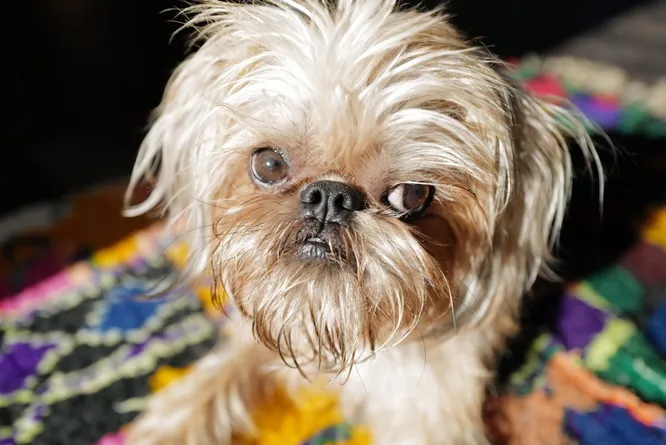
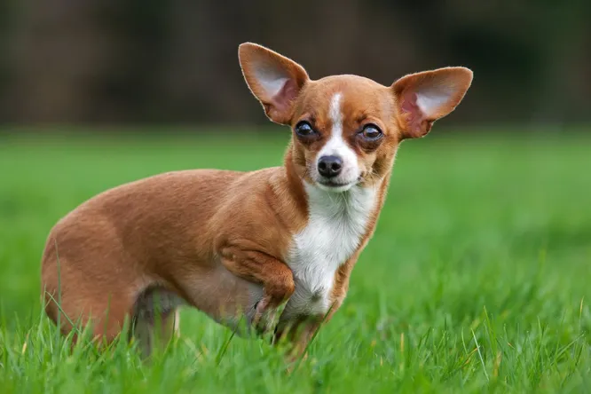
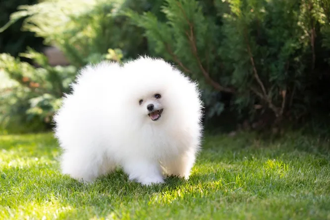
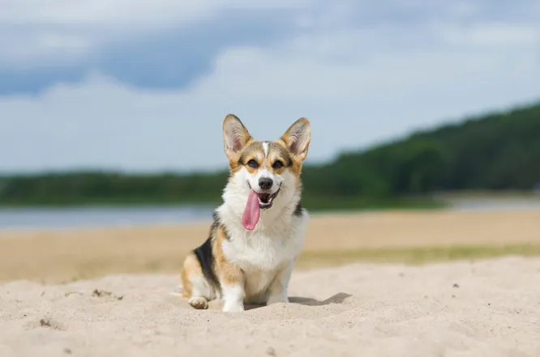
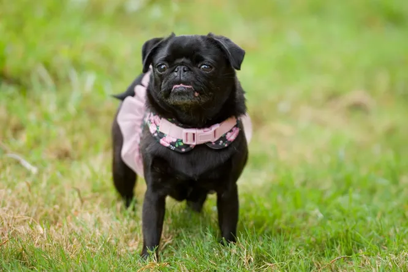
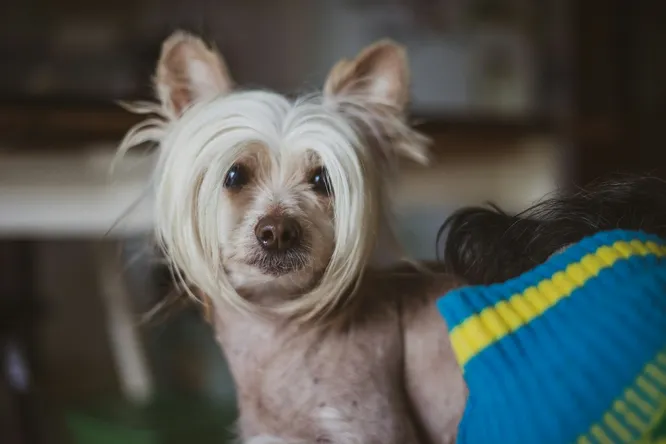

Только посмотрите на эти очаровательные мордочки — одним своим видом они вызывают умиление и улыбку радости, а как же приятно будет видеть их ежедневно рядом с собой <




Брюссельский гриффон: Есть собаки, которые до старости щенки... А есть брюссельский гриффон, который с щенячьего возраста выглядит, как угрюмый, бородатый старичок...Чихуахуа:На чихов невозможно смотреть без улыбки, а на их проделки — без смеха. Характер у чихуахуа явно позаимствован от большой собаки..Померанский шпиц: Гораздо смешнее шпиц выглядит, когда начинает «говорить». Или лаять в ярости (ой, это так страшно, вы не представляете). . Вельш-корги-пемброк: Корги называют булочкой с ушами на лапках. И правда, эти плотные, приземистые собачки забавны даже своим телосложением.

Мопс: Поесть, так поесть. Надо играть с детьми? Значит надо. А если вас нет дома, он просто будет дрыхнуть весь день.

Китайская хохлатая: Особенность китайских хохлатых собак заключается в их уникальной «прическе», которая вызывает улыбку.